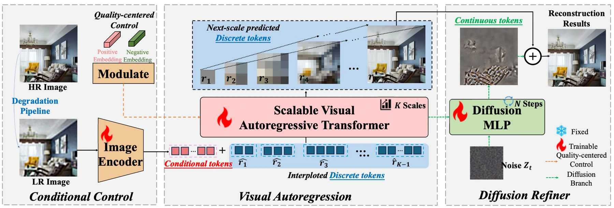
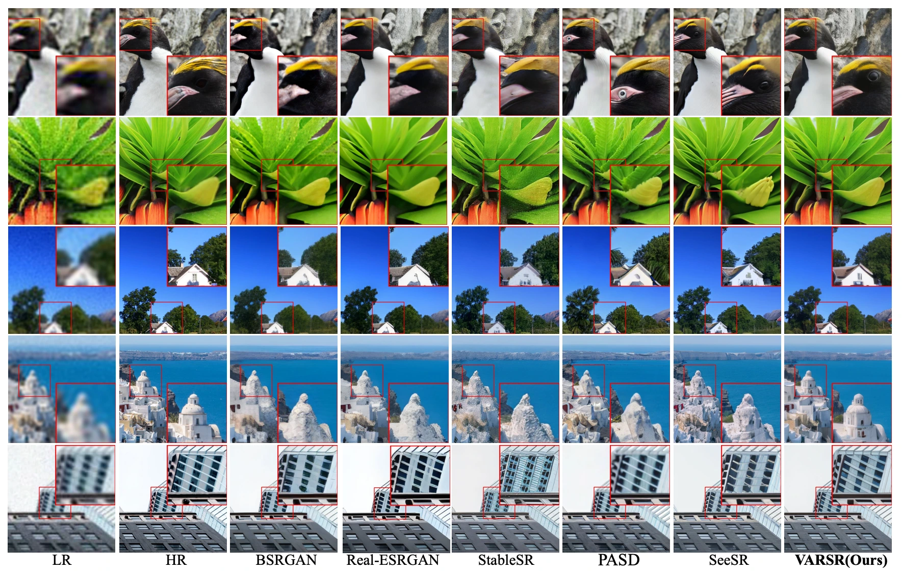

Autoregression is how language models work: predict the next token conditional on everything before it. Images have no obvious token order, which is one reason diffusion dominated generation — until next-scale prediction reframed the sequence as coarse-to-fine rather than left-to-right.
自回归是语言模型的工作方式：在已有内容条件下预测下一个 token。图像没有显然的 token 顺序，这也是扩散模型长期主导生成的原因之一——直到下一尺度预测把序列重述为由粗到细，而不是从左到右。
Super-resolution fits that framing better than text-to-image does. There is already a correct low-resolution answer, namely the input, so the problem is not inventing an image but deciding what detail to add on top of one that is given.
超分辨率比文生图更契合这个框架。它本来就有一个正确的低分辨率答案，即输入本身；因此问题不在于凭空造出一张图，而在于决定在既定内容之上补什么细节。
VARSR builds on this with next-scale prediction, conditioning every scale on prefix tokens derived from the low-resolution image, and adds scale-aligned rotary positional encodings plus a diffusion refiner for quantization residuals. In a 50-image study it is selected 55.2% of the time among six methods, at roughly a tenth of DiffBIR’s reported runtime.
VARSR 在此基础上采用下一尺度预测，让每一层尺度都以源自低分辨率图像的 prefix token 为条件，并加入尺度对齐的旋转位置编码与处理量化残差的扩散精修器。在一项 50 张图像的研究中，它在六种方法间获得 55.2% 的选择率，耗时约为 DiffBIR 报告值的十分之一。
Super-resolution is cast as next-scale prediction: a coarse representation is established first and successive scales are predicted from it, with the low-resolution image entering as prefix tokens rather than as a one-shot condition.
超分辨率被表述为下一尺度预测：先确立粗粒度表示，再据此逐层预测更细的尺度；低分辨率图像以 prefix token 的形式进入，而不是一次性注入的条件。
Scale-aligned rotary positional encodings keep locations comparable across resolutions, and a diffusion refiner models the quantization residual — separating semantic structure from what a discrete tokenizer cannot represent.
尺度对齐的旋转位置编码让不同分辨率下的位置保持可比；扩散精修器则建模量化残差——把语义结构与离散分词器无法表示的部分分开处理。
55.2% of selections in a 50-image user study on DRealSR and RealSR across six methods, at 0.59 s per image — about 10.1% of DiffBIR’s reported runtime in the same setup.
在 DRealSR 与 RealSR 上、六种方法之间的 50 张图像用户研究中获得 55.2% 的选择率，单图耗时 0.59 秒——约为同一设置下 DiffBIR 运行时间的 10.1%。
Coarse first, then detail先立 coarse，再补细节
Next-scale prediction does not order pixels spatially. The model predicts a coarse token map, then a finer one conditioned on it, then a finer one still, so each level is generated knowing what the level above has already committed to.
下一尺度预测并不按空间顺序排列像素。模型先预测一张粗粒度 token 图，再以它为条件预测更细的一张，然后再细一层——于是每一层在生成时，都已知道上一层已经确定了什么。
The ordering is a strong structural prior. A spatially autoregressive model can produce a plausible left half and a plausible right half that disagree at the seam; a coarse-to-fine model cannot, because global layout is decided at the scale where it is cheapest to decide.
这个顺序是一项很强的结构先验。按空间顺序自回归的模型可能生成合理的左半与合理的右半，却在接缝处互相矛盾；由粗到细的模型不会，因为全局布局是在决策成本最低的那个尺度上被决定的。
The low-resolution input enters as prefix tokens — a sequence the autoregressive model attends to at every scale rather than a conditioning vector injected once. That targets a specific failure mode: generative super-resolution drifting from the input because the condition was applied only at the first step.
低分辨率输入以 prefix token 的形式进入——这是一条自回归模型在每个尺度都会去注意的序列，而不是一次性注入的条件向量。它针对的是一个具体的失效模式：生成式超分辨率由于条件只在第一步施加，而逐渐偏离输入。


Making scales comparable让不同尺度可比
Two problems follow from predicting at several resolutions. Positions at different scales do not correspond under a naive positional encoding, and a discrete tokenizer cannot represent the continuous residual between its quantization and the true pixel values.
在多个分辨率上做预测会引出两个问题。不同尺度下的位置在朴素位置编码下并不对应；而离散分词器无法表示它的量化结果与真实像素值之间的连续残差。
Scale-aligned rotary positional encoding fixes the first by rescaling positions so that the same image location keeps a consistent relative position across scales. Without it the model has to relearn the correspondence at every level, which wastes capacity on something that could be built in.
尺度对齐的旋转位置编码解决第一个问题：它重新缩放位置，使同一图像位置在不同尺度下保持一致的相对位置。没有它，模型不得不在每一层重新学习这套对应关系，把容量浪费在本可以内建的东西上。
The diffusion refiner fixes the second by modelling the quantization residual so that the final output reaches pixel-level fidelity. The split matters for credit assignment: the autoregressive model owns semantic structure, and the refiner owns only what discretization threw away.
扩散精修器解决第二个问题：它建模量化残差，使最终输出达到像素级保真。这个切分对归因很重要——自回归模型负责语义结构，精修器只负责离散化丢掉的那部分。
What next-scale prediction delivers下一尺度预测带来了什么
The evaluation combines reference-based metrics, no-reference quality scores, visual comparison and human preference. That combination is the right one here, because a method can win on perceptual scores while losing on fidelity and any single one of those numbers would hide it.
评测组合了有参考指标、无参考质量分数、视觉对比与人类偏好。在这里这种组合是恰当的，因为一个方法完全可能在感知分数上取胜却在保真度上失利，而其中任何一个单独的数字都会掩盖这一点。
The 55.2% selection rate in a 50-image study across six methods is the preference result, and 0.59 s per image is the efficiency one. The ablations that carry the argument are the ones comparing prefix-token conditioning against alternative ways of injecting the low-resolution image.
50 张图像、六种方法研究中 55.2% 的选择率是偏好层面的结果，单图 0.59 秒是效率层面的结果。真正支撑论证的消融，是那些把 prefix token 条件化与其他低分辨率注入方式做对比的实验。
Those ablations exist to answer a fair objection. A diffusion refiner can produce impressive detail on its own, so a strong result might come from the refiner rather than from autoregressive restoration. Separating the positional encoding and the refiner is what makes this a claim about next-scale prediction instead of about the pipeline.
这些消融是为了回应一个合理的质疑。扩散精修器本身就能产出令人印象深刻的细节，因此一个亮眼的结果可能来自精修器，而非自回归恢复机制。把位置编码与精修器的贡献剥离开，才使这成为一项关于下一尺度预测的论断，而非关于整条流水线的论断。


Representation, not just architecture是表示问题，不只是架构问题
The transferable idea is to choose the representation before choosing the network. Coarse structure is decided where it is cheap, fine detail is conditioned on it, and the input remains an explicit condition throughout — a principle that does not depend on this particular tokenizer.
可迁移的核心思路是：先选表示，再选网络。粗粒度结构在成本最低处被决定，细节以它为条件生成，而输入始终作为一个显式条件存在——这条原则并不依赖于某一个具体的分词器。
The caveat is the one that applies to every generative restoration method. Realism and fidelity are in tension, and a model that wins a preference study may still add texture that was not in the scene. Prefix-token conditioning reduces drift; it does not certify the absence of hallucination.
局限则是所有生成式恢复方法共有的那个。真实感与保真度彼此张力，一个在偏好研究中取胜的模型，仍可能添加场景中并不存在的纹理。prefix token 条件化减少了漂移，但并不能证明幻觉不存在。
The efficiency comparison should also be read with its assumptions intact — hardware, image size and implementation all move it, so 10.1% of DiffBIR’s runtime is a statement about one measurement setup. The interesting claim is that autoregression can be cheaper here, because the coarse levels are cheap to predict.
效率对比也应当连同其假设一起被阅读——硬件、图像尺寸与实现都会改变它，因此“DiffBIR 运行时间的 10.1%”是关于某一次测量设置的表述。真正有意思的论断是：在这里自回归可以更便宜，因为粗粒度层级本来就很好预测。
Paper & authors
Visual Autoregressive Modeling for Image Super-Resolution
ICML 2025
Cite this work
@misc{qu2025visualautoregressivemodelingimage,
title = {Visual Autoregressive Modeling for Image Super-Resolution},
author = {Yunpeng Qu
and Kun Yuan
and Jinhua Hao
and Kai Zhao
and Qizhi Xie
and Ming Sun
and Chao Zhou},
year = {2025},
eprint = {2501.18993},
archivePrefix = {arXiv},
primaryClass = {cs.CV},
url = {https://arxiv.org/abs/2501.18993}
}